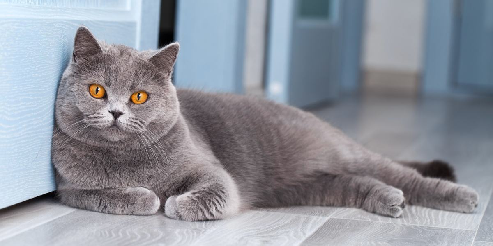

Welcome to My Page!
If you’ve ever been curious about what your cat is trying to tell you, or if you just want to understand feline behavior better, you’re about to find out!
From playful pounces to slow blinks of affection, every action has meaning. Whether your cat is rubbing against your leg, flicking its tail, or suddenly sprinting across the room, there’s usually a reason behind it.
By learning to recognize these behaviors, you’ll be able to respond to their needs and emotions more effectively, making your cat feel more comfortable and understood.
